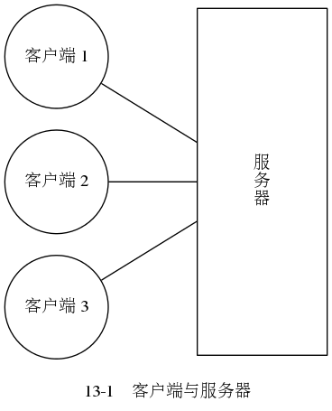
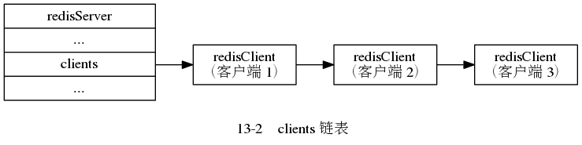
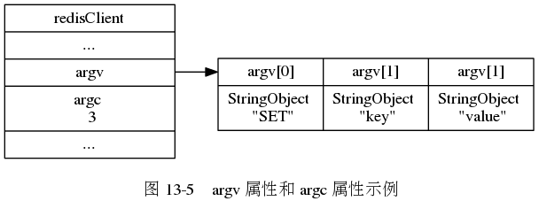
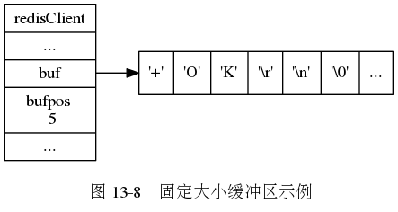
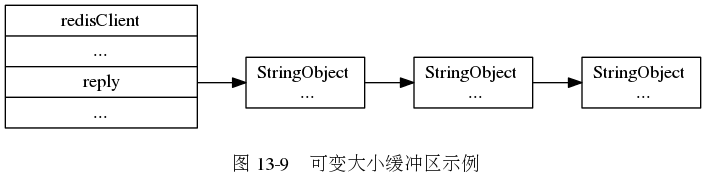
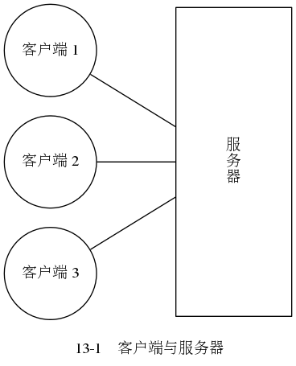
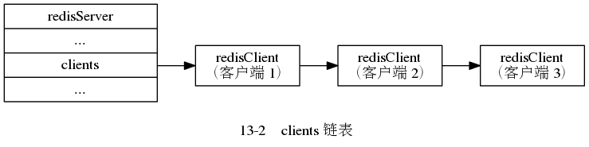
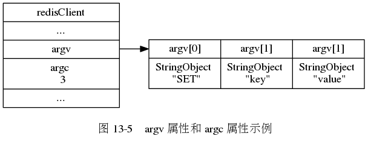
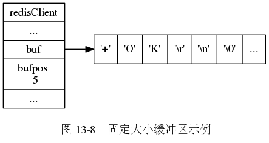
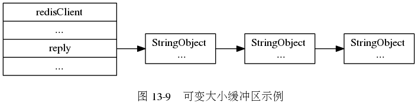

第 13 章： 客户端¶
三个连接到服务器的客户端。

这三个客户端在服务器状态 clients 属性中的样子。

Redis 客户端的输入缓冲区示例。
![digraph {
label = "\n 图 13-4 querybuf 属性示例";
rankdir = LR;
//
node [shape = record];
client [label = " redisClient | ... | <querybuf> querybuf | ... ", width = 2];
sdshdr [label = " <head> sdshdr | free \n 0 | len \n 33 | <buf> buf "];
buf [label = " { '*' | '3' | '\\r' | '\\n' | ... | 'v' | 'a' | 'l' | 'u' | 'e' | '\\r' | '\\n' | '\\0' } "];
//
client:querybuf -> sdshdr:head;
sdshdr:buf -> buf;
}](_images/graphviz-a31c14fe0328c4dbfcc11664c52869dfa9542060.png)
Redis 客户端的 argv 属性和 argc 属性示例。

Redis 客户端的固定大小输出缓冲区示例。

Redis 客户端的可变大小输出缓冲区示例。

三个连接到服务器的客户端。

这三个客户端在服务器状态 clients 属性中的样子。

Redis 客户端的输入缓冲区示例。
Redis 客户端的 argv 属性和 argc 属性示例。

Redis 客户端的固定大小输出缓冲区示例。

Redis 客户端的可变大小输出缓冲区示例。
